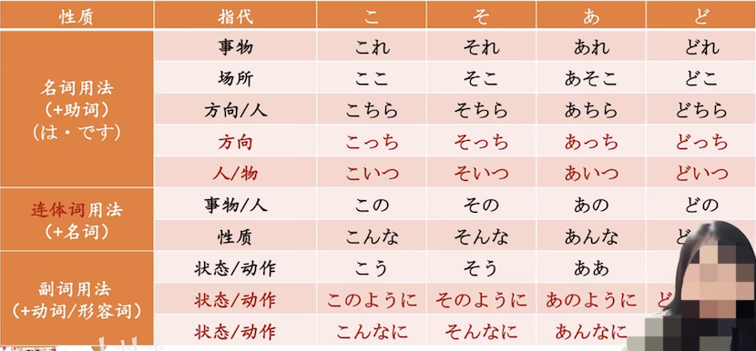
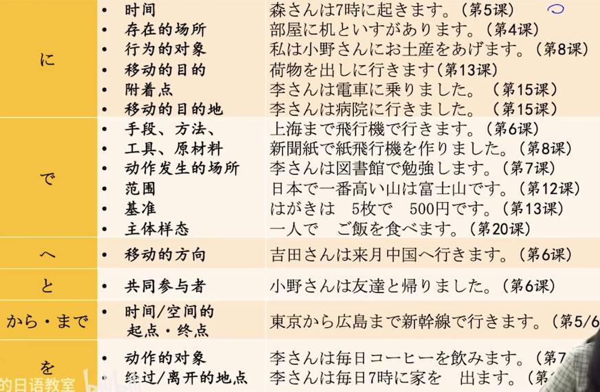
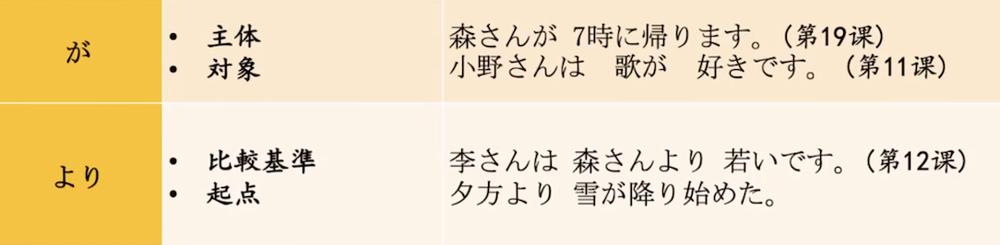
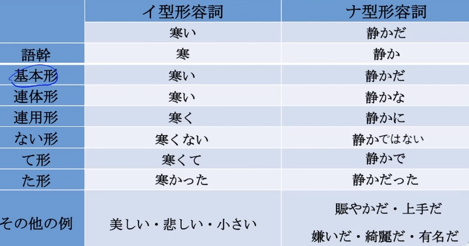
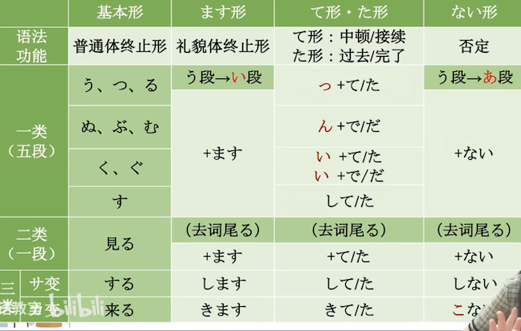
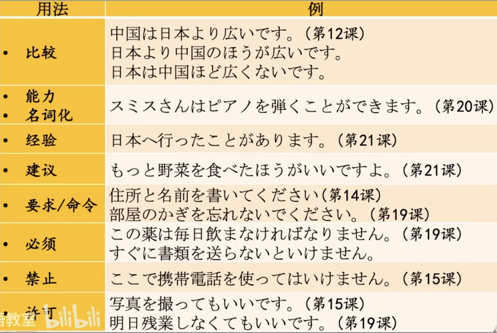

标日初级上册总结
N が 欲しいです。 Nが 欲しくないです。
- 私わ新しい洋服が欲しいです。
〜が好きです。
〜が嫌（きら）いです。
〜が怖いです。
〜が分かります。
〜ができます。
〜が上手です。
〜が下手（へた）です。
〜が苦手（にがて）です。
V 连用形+たい：表示想要做～
- たい看做一类形容词活用。 私は 映画（えいが）を 見たいです。
- 否定：見たくないです。 今日は お酒を 飲みたくないです。 飲む—>飲み
变化 17 课 小火车理论形容词加动词
- Aいく なります
Aいく します
形容词做副词修饰动词。
携帯電話は とても 小さく なりました。
日本語小火车 18 课
N ＋で＋ N ：会社員で、部長です。
N＋に＋V ：医者に なりした。
Vて＋V ：帰って、勉強します。
Aい＋N ：辛い 料理。
ANな＋N ：綺麗な 町。
Aく＋V ：おきく なります
AN＋に＋V ：綺麗に して ください。
Aく＋て＋Aい・AN ：安くて 美味しい
ANで＋Aい・AN ：静かで 広い
ない形 19课
V＋ても＋ください。 ：请做某事
Vない＋で＋ください。 ：请不要做某事
Vて＋も＋いいです。 ：表许可
Vなく＋て＋も＋いいです。 ： 不做也可以
待って ください。
行かないで ください。
心配しなくても いいです。
滑っても いいです。
遅れない 方が いいです。
Vて は いけません。 ：表禁止
Vあ＋なければなりません。 ：必须 飲ま なければ なりません。 送ら ないと いけません。
明日は 残業しなく て も いいですよ。
首先变否定，然后当一类形容词变て形
残業する—>残業しない—>残業しなくて
句子当名词用 第20课
車を運転する ことが できますか
何度か見に行った ことが あります
简体使用 第 22 课
森さんは 毎晩 テレビを みる。
昨日は とても 忙しかった。
コンピュータは 簡単では ない。
今日は 曇りだ。
简体过去式的たり。か どうか
１小野さんは 休みの日、散歩したり 買い物に 行ったり します。
２日本語の先生は 中国人だったり 日本人だったり です。
３私は 今年の夏、北京へ行く か どうか 分かりません
Aかったり Aかったり です。
AN・N だったり AN・N だったり です。
简体と思います。んです。
〜と 思います。
～と 思っています。 —反复
〜と 思いました。 —过去
〜と 思っていました。 —过去反复
すみません、頭が 痛いんです。
一、课程回顾
第1单元：小李赴日 —名词谓语句（判断句）
第1课：李さんは 中国人です。
第2课：これは 本です。
第3课：ここは デパートです。
第4课：部屋に 机と椅子が あります。 —存在句/所在句，动词谓语句
第2单元：小李的公司生活 —动词谓语句，格助词
第5课：森さんは 7時に起きます。
第6课：吉田さんは 来月中国へ行きます。
第7课：李さんは 毎日コーヒーを飲みます。
第8课：李さんは 日本語で手紙を書きます。
第3单元：小李在箱根 —形容词谓语句(描述句)
第9课：四川料理は 辛いです。
第10课：京都の紅葉は 有名です。
第11课：小野さんは 歌が 好きです。
第12课：李さんは 森さんより 若いです。（わかい）
第4单元：小李的公司生活
第13课：机の上に 本が 三冊 あります。 —数量词
第14课：昨日デパート行って、買い物しました。 —动词的て形
第15课：小野さんは 今新聞は読んでいます。 —形容词的て形
第16课：ホテルの 部屋は 広くて 明るいです。
第5单元：小李在日本迎春
第17课：私は 新しい 洋服が 欲しいです。 —表达愿望
第18课：携帯電話を とても 小さく なります。 —表达变化
第19课：部屋の 鍵を 忘れないで ください。 —动词的ない形
第20课：スミスさんは ピアノを 弾く ことができます。 —动词的基本形
第6单元：再见！日本
第21课：私は すき焼きを食べた ことが あります。 —动词的た形
第22课：森さんは 毎晩テレビを見る。 —简体形
第23课：休みの日、散歩したり 買い物に行ったりします。
第24课：李さんは もうすぐ 来ると 思います。 —た形、简体形的应用
二、语法总结
1.三大基本句型
名词谓语句
形容词谓语句
动词谓语句
2.存在句
存在句/所在句 互相转换
3.指示词

4.数量词
汉数词：いち、に、さん、し
和数词：ひとつ、ふたつ、みっつ
常用的量词：13课
5.格助词
格助词是什么？
提示格关系的助词（内涵）
を・に・まで・が・より・から・で・へ・と（9个外延）
森さんが 九月に 家族と 飛行機で 大阪から 中国へ 行きます。
格关系：各个成分和谓语的关系。
为什么用格助词？
提示格关系。
怎么选择格助词？
各部分和谓语的关系所决定。


6.は和が的用法
九月には 森さんが 家族と 飛行機で 大阪から 中国へ 行きます。
は：取立て助词，表强调。主题
が＝を＋は。强调的是谓语，陪衬谓语的主语
今日は 森さんが くる。 —提示主语
李さんは 日本の歌が 好きです。 --提示对象
は：在否定句加强否定语气。
説明する必要はありません。
は：表示对比
私は寿司は嫌いですが、ラーメンは好きです。
私は寿司は嫌いだ。 —主题，对比
私は寿司が嫌いだ。 --は：主题；が：对象，非对比。
は：提示旧信息。
が：提示新信息。
吉田さんは どなたですか。
あの方が 吉田さんですか。
どれが 森さんの鞄ですか。
森さんの鞄は どれですか。
は：着重后面
が：着重前面
森さんは 帰りました。
森さんが 帰りました。
は：影响范围大，往往可以统筹整个大句子。
が：多用于小句子的主语。
私は この料理が 辛い かどうか 知りません。
小野さんが 作った餃子を 森さんは 全然食べました。
は：句子里可以有多个“は”
吉田課長は 毎週の金曜日には、居酒屋へ行きます。
7.形容词的分类&活用
Aい
AN（だ）

8.动词的分类&活用
一类动词，五类动词
词尾：う・つ・る / ぬ・ぶ・む / く・ぐ / す
い・え段以外的假名+る结尾（a/u/o段+る）
二类动词，一段动词
词尾：い/え ＋ る
い・え段假名+る结尾（i/e段+る） 大部分为二类
三类动词
サ、カ变动词 来る、する / 动作名词 + する

9.四种基本形式
| | | | 现在/将来 | 过去 | | --- | --- | --- | --- | --- | | 动词 | 敬体 | 肯定 | | | | | | 否定 | | | | | 简体 | 肯定 | | | | | | 否定 | | | | 一类形容词 | 敬体 | 肯定 | | | | | | 否定 | | | | | 简体 | 肯定 | | | | | | 否定 | | | | 名词 | 敬体 | 肯定 | | | | | | 否定 | | | | | 简体 | 肯定 | | | | | | 否定 | | |
10.敬体、简体
11.日语接续：小火车理论
12.时态
Vる 未来/现在
今から手を洗う
庭に犬がいる
Vている 正在进行，结果状态，习惯
今新聞を読んでいます。 —进行
森さんは車を停まって —结果状态
私は毎日コーヒーを飲んでいます。 —习惯
Vていた ー过去一段时间的持续
Vた —过去/完了
过去
映画を観た後で、食事をしました —相对时态
昨日映画を見ましたか。
ーーいえ、見ませんでした。
完了
もう映画を見ましたか。
ーーいえ、まだ見ていません。
13.细碎句型（比较、建议、经验、命令、禁止、允许）

记单词
汉字
前拨后长，单短双长
ao/ou —> う
前鼻音—> ん
后必应—>い
促音变
- 以「つ・ち」结尾+「か・さ・た・は」行
発達：はつ ＋ たつ ＝ はったつ
失敗：しつ ＋ はい ＝ しっぱい
- 以「く・き」结尾+「か」行
欲求：よく ＋ きゅう ＝ よっきゅう
石鹸：せき ＋ けん ＝ せっけん
浊音变
- 以「う・ん」结尾 + 「か・さ・た・は」行
中＋国：ちゅう ＋ こく ＝ ちゅうごく
患＋者：かん ＋ しゃ ＝ かんじゃ
原＋発：げん ＋ ぱつ ＝ げんぱつ
外来词的发音规律
| 英语 | 日语 | 例子 | | --- | --- | --- | | k | か行 | インク（ink） | | g | が行 | ガール（girl） | | t | タ行 | テスト（test） | | d | ダ行 | ダーク（dark） | | b | バ行 | ベッド（bed） | | p | パ行 | パスポート（passport） | | m | マ行 | メリット（merit） | | r・l | ラ行 | ラベンダー（lavender） | | h・f | ハ行 | ファン（fan） | | v | バ行 | ビザ（visa） |
和语词的记忆
見送り：見る・送る 話し 魅力（みりょく） 出迎え（でむかえ）
寝坊（ねぼう）：寝る 起きる 企業（きぎょう） 業務（ぎょうむ） 無理 理論（りろん） 論じる（ろんじる） 説明（せつめい） 明らか（あきらか） 秋（あき） 話す（はなす） 探す（さがす） 探求（たんきゅう） 急（きゅう） 求める（もとめる） 求人（きゅうじん） 求人情報（きゅうじんじょ）